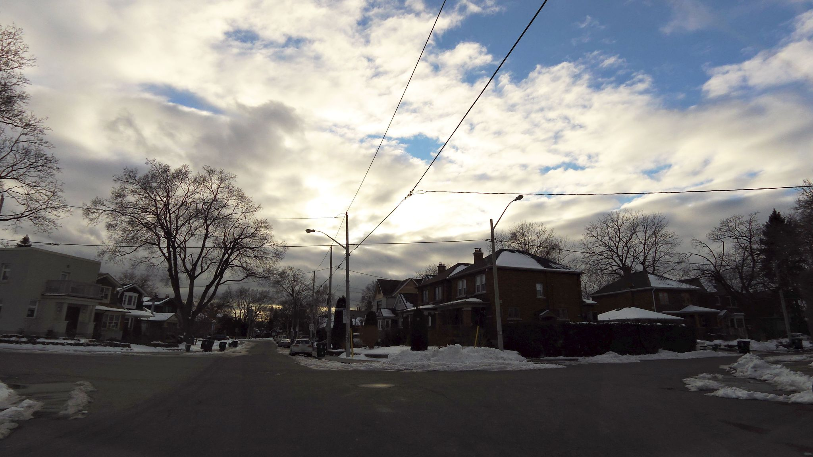

Seed
- the diagonal black wires slicing the sky into asymmetric panes
- bare deciduous trees with that fine secondary branching that goes pixel-thin at the tips
- the dirty plowed snow shoulders, melt-slumped, gravel-flecked along the curb
Wander
The wires are doing something the architecture isn't: they cut the sky into uneven trapezoids the way a Mondrian would, except Mondrian fussed over the proportions and these are accidental, set by where the pole crews could anchor a transformer in 1953. There's a whole class of unintentional composition that overhead infrastructure produces — the Tokyo wire-spaghetti that Western photographers find picturesque and locals consider an eyesore, the Rio favela bundle that's actually a load-bearing public utility encoded as visible chaos. I think the reason these read as compositions and not just clutter is that they obey one strict rule: they always go *between two specific things*. Every line has a job. Compare that to graphic design, where decorative lines almost always feel weak — a hairline rule under a heading is fine, but a hairline rule that just floats reads as performance. Saul Bass understood this; the lines in his Vertigo titles are *doing* something, spiraling toward or away from a fixed point. A line without a load is suspect. Maybe that's why the early Dropbox illustrations aged so badly — the floating squiggles that didn't connect anything, freed of the obligation to terminate. The wires are honest in a way that most decoration isn't; they are not pretending to be structural, they *are* structural, and the sky behind them just happens to be a backdrop.
Branch
The bare-tree silhouette as a worked-out negative-space problem — the way Japanese ink painters used to leave the tip of every branch unresolved on purpose.
Chose C
A slight left breaks the axis without abandoning the block, which should give the load-bearing-line drift a fresh angle (literally) before it gets too settled into Mondrian/Bass territory.